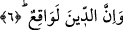

Size vaadedilen ba’s, hesap veya mükâfât ve cezâ muhakkak gerçekleşecektir. Yâni
bunlar her hal ve durumda doğrudur, sahihtir ve bunda asla hilâf yoktur.
el-İrşâd’da müellif şöyle der: “Vaadin doğrulukla tavsif edilmesi, hoşnud kalınan
hayatı tavsif eder gibidir. Zira buradaki ism-i fâil, mefûl bihe dayandırılmıştır. Mânâ:
“Yaşadığınız kulluk hayatından râzı olunursa vaad gerçekleştirilecektir” şeklindedir.
İbnu’ş-Şeyh şöyle demiştir: Âyetteki “sâdık” kelimesi “zû sıdk” anlamındadır. Çünkü
burada vaadedilen şeylerin sâdık olması değil bizzat vaadin sâdık olması sözkonusudur.
Âyetteki
“mâ”nın
mevsûle
olmayıp
“size
olan
vaadimiz/müjdemiz
veya
vâidimiz/tehdidimiz” anlamında masdariye olması da mümkündür. Zira söz, inkârcılara
yönelik gelmektedir.
6. Ve cezâ mutlaka vuku bulacaktır.
Şüphesiz amellerin karşılığı verilecektir. Zirâ tabîat muktezâsına aykırı bedîî/eşsiz
fiillere kâdir olan Allah, vaadedilen ba’si gerçekleştirmeye de elbette kâdirdir.
Bazı ulema şöyle demiştir: Allah itâatkârlara cennet, tevbekârlara muhabbet, evliyaya
kurbet/yakınlık, âriflere vuslat ve taliblere bâtınî duyguları vaadetmiştir. Nitekim bir
kudsî hadiste Allah: “Kim beni talep derse, bulur”[5] buyurmaktadır. Allah’ın vaadi
kesinlikle gerçekleşecektir. Yine bir âyette de “Kim Allah’tan daha çok sözünde
durablir?” (et-Tevbe 9/111) buyrulmuştur. Allah fâsıkları cehennemle, kötülüklere
devamda ısrarlı olanları ilâhî rahmetten uzaklıkla, gaflette olan câhilleri ayrılıkla, boş
duranları da ziyanla tehdid etmiştir.
Bazı ulemâ şöyle demiştir: “Allah Teâlâ’nın yemin etmesinin hikmeti nedir? Eğer bu
mü’minler için ise zâten mümin Allah Teâla’nın yemini olmadan da sırf haber
vermesiyle o husûsu tasdik eder. Kâfir için de bu yemin hiçbir şey ifâde etmez. Çünkü o
zâten Allah’a inanmamaktadır.” diye bir soru sorulsa buna şöyle cevap vermek
mümkündür: Kur’ân-ı Kerim Arap lisanıyla inmiştir ve yemin Arap dilinin önem
verdiği bir husustur. Bir mes’elenin vurgulanması îcâb ettiğinde yeminli ifâdeler
kullanılır. Yine bir hususta verilecek hükmün tâyini ya şehâdet/görme veya yemin ile
belirlenir. Bu sebepledir ki, Allah kâfirlerin tutunacak hiçbir delilleri olmaması için her
iki türü de kitabında zikretmiştir. Meselâ şehâdete Âl-i İmran sûresi 18. âyette yer
vermektedir.
Yemin ancak büyük bir şey üzerine yapılır. Allah Kur’ân-ı Kerim’in yedi yerinde
bizzat kendisi üzerine yemin etmiş, diğer yerlerde de sûrenin başında olduğu gibi
mahlûkatı üzerine misal vermek gerekirse incir, zeytin, saflar, güneş, gece, kuşluk vakti
gibi nesne ve zamanların üzerine kasemde bulunmuştur. Şâyet sen: “Allah Teâlâ
mahlûkatın üzerine yemin ettiği halde, neden insanlara kendisinden başkalarının üzerine